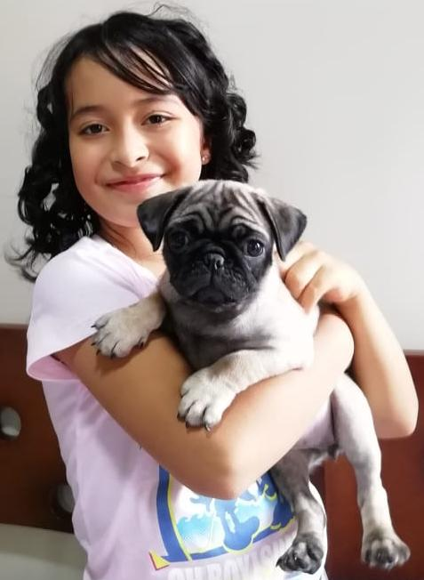

Naci el 7 de noviembre de 1996, creci rodeada de mi nucleo familiar,
madre, padre y hermano. Y mi familia materna. Me gradue como licenciada
en lenguas modernas y desde entonces me he desempeñado como profesora de
ingles en colegios y diferentes institutos,aunque siempre he disfrutado
más aprender frances.
Actualmente vivo en la ciudad de armenia con mi hija isabella de 8 años,
mi esposo y 2 mascotas.

En mi tiempo libre disfruto de actividades como:
Me gusta gran variedad de generos musicales
aunque mis favoritos son como jazzy blues y una de mis canciones favoritas es: la vie en rose
No se mucho sobre arte pero me interesa Monet y Van gogh.
finalmente, pronto me gustaria visitar a mi familia en el extranjero y asi
conocer nuevos lugares como: Italia, Holanda, Francia y Alemania.